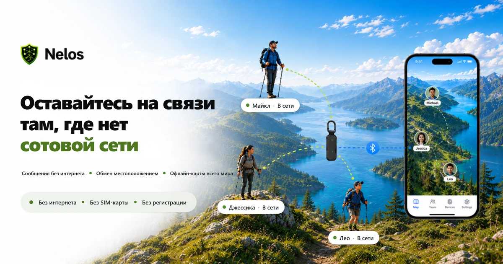

Розыгрыш 10 промокодов на Nelos Pro
Каждый промокод открывает бессрочный доступ к Nelos Pro. Победители смогут выбрать код для Android или iPhone.
Приём заявок открыт
Приём заявок до .
Участвовать в Telegram«Участвую» или «Хочу Nelos Pro» · Один билет на аккаунт

Как участвовать
Оставьте комментарий «Участвую» или «Хочу Nelos Pro» под единственной конкурсной публикацией в Telegram. Один Telegram-аккаунт может получить один билет.
Сроки и билеты
- Начало приёма
- Окончание приёма
- Розыгрыш
Окончательный список номеров билетов появится здесь после завершения регистрации.
Результаты розыгрыша
Результат ещё не опубликован.
Перед розыгрышем MeshDraw опубликует план и список билетов. После розыгрыша здесь появятся выигравшие билеты и проверочный пакет. По нему можно будет пересчитать результат и полный порядок резерва.
Как работает проверка MeshDrawЧто даёт Nelos Pro
Каждый победитель получает один код бессрочного доступа к Nelos Pro для выбранной платформы. Коды для Android и iPhone выпускаются отдельно. Срок активации кода и срок доступа Pro указаны в условиях.
Для связи потребуется совместимое радиоустройство. Для сообщений и обмена местоположением участникам нужны совместимые устройства MeshCore LoRa. Радиоустройства в приз не входят. Телефон может записывать собственный маршрут и показывать заранее скачанные карты без радио.
| Возможности | Бесплатная версия | Nelos Pro |
|---|---|---|
| Групповые и личные сообщения | Да | Да |
| Обмен местоположением | Да | Да |
| Запрос помощи | Да | Да |
| Безопасные зоны | Да | Да |
| Режим поиска | Да | Да |
| Открытие и просмотр GPX-маршрутов | Да | Да |
| Экспорт истории перемещений в GPX | Да | Да |
| Одновременно активные группы | 1 | Несколько |
| Трекеры на одного пользователя в каждой группе | 1 | Без ограничений |
| Одновременно сохранённые офлайн-карты | До 5 | Без ограничений |
| Просмотр истории перемещений | Последние 24 часа | До 90 дней |
| Импорт и сохранение GPX-маршрутов | Нет | Да |
| Экспорт истории в CSV | Нет | Да |
В одной группе могут быть пользователи бесплатной версии и Pro — все могут переписываться и видеть друг друга на карте
Nelos Pro — разовая покупка без подписки.
Полные условия участия
- Приём заявок проходит под одной конкурсной публикацией в Telegram. В установленный срок оставьте комментарий «Участвую» или «Хочу Nelos Pro» от своего аккаунта.
- На один Telegram-аккаунт выдаётся один билет. После закрытия приёма список билетов фиксируется.
- В розыгрыше предусмотрено десять призовых мест. Каждый победитель выбирает один код для Android или iPhone.
- Если зафиксировано от одного до десяти билетов, каждый участник получает по одному призу. Если билетов нет, розыгрыш не проводится.
- Промокоды предоставляются бесплатно, не подлежат перепродаже и не имеют денежного эквивалента.
- Коды действуют в России и в других странах, где Nelos доступен в Google Play или App Store.
- Для активации нужна учётная запись Google или Apple и согласие с условиями соответствующего магазина.
- Если победитель не отвечает в течение 72 часов с подтверждённой отправки уведомления, право на невыданный приз переходит к следующему участнику из резервного списка.
- Для жеребьёвки используется архив Comchan за 4 декабря 2026 года с 17:54 до 17:55 МСК. Получение данных запланировано на 18:00 МСК.
- Активируйте промокод до включительно, по московскому времени. Активированный доступ к Nelos Pro бессрочный.